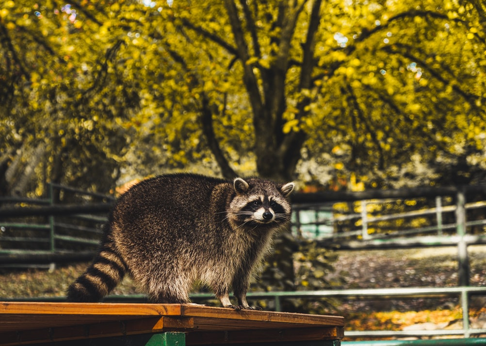
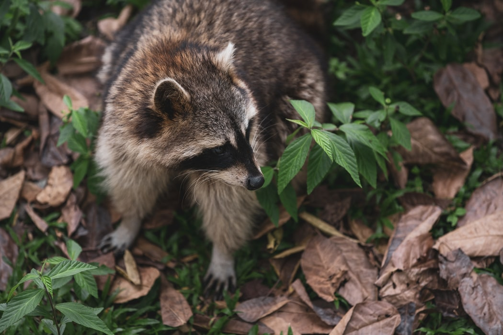

Gấu mèo (danh pháp hai phần: Procyon lotor) hay còn gọi là gấu trúc Mỹ là một loài động vật có vú bản địa Bắc Mỹ. Đây là loài lớn nhất trong họ Gấu mèo (Procyonidae). Loài này có thân dài 40–70 cm, cân nặng 3,5–9 kg. Chúng hoạt động về đêm, chúng chủ yếu ăn thịt, với một chế độ ăn bao gồm khoảng 40% động vật không xương sống, 33% thức ăn thực vật và động vật có xương sống 27%. Bộ lông có màu xám, trong đó gần 90% là lông dưới dày đặc, cách ly chống lại thời tiết lạnh. Hai tính năng đặc biệt nhất của nó là cực kỳ khéo léo bàn chân trước của nó và mặt nạ trên khuôn mặt của nó, đó là các chủ đề trong thần thoại của một số bộ lạc da đỏ Mỹ. Gấu mèo được ghi nhận là có trí thông minh, với các nghiên cứu cho thấy rằng chúng có thể nhớ các cách để thực hiện nhiệm vụ lên đến ba năm sau đó.
Các môi trường sống ban đầu của gấu mèo Mỹ là rừng lá sớm rụng và rừng hỗn hợp của Bắc Mỹ, nhưng nhờ khả năng thích nghi, chúng đã mở rộng phạm vi đến khu vực miền núi, đầm lầy ven biển, và các khu vực đô thị, nơi chúng bị nhiều chủ nhà xem là loài gây hại. Do kết quả của sự thoát ra và du nhập có chủ ý vào giữa thế kỷ 20, gấu mèo Mỹ cũng phân bố trên toàn lục địa châu Âu, khu vực Kavkaz và Nhật Bản.
Mặc dù trước đây được cho là loài đơn độc, có bằng chứng cho thấy gấu mèo Bắc Mỹ tham gia vào các tập tính xã hội cụ thể theo giới tính. Các con cái có quan hệ họ hàng thường xuyên chia sẻ một khu vực chung, trong khi các con đực không có quan hệ họ hàng sống cùng nhau trong các nhóm lên tới bốn con để duy trì vị thế của chúng với những con đực xa lạ trong mùa giao phối cũng như trước những kẻ xâm lược tiềm năng khác. Kích thước phạm vi sinh sống là khác nhau ở bất cứ nơi nào, từ 3 ha (7 mẫu Anh) cho các con cái ở vùng đô thị cho đến 50 km2 đối với các con đực trong vùng thảo nguyên (20 dặm vuông). Sau một thời gian mang thai khoảng 65 ngày, 2-5 con non được sinh ra vào mùa xuân. Các con non sau đó được con mẹ nuôi dưỡng cho đến khi phân tán vào cuối mùa thu. Mặc dù người ta biết rằng gấu mèo Mỹ nuôi nhốt đã đạt tuổi thọ hơn 20 năm, tuổi thọ trung bình trong tự nhiên chỉ 1,8 đến 3,1 năm. Trong nhiều khu vực, việc săn bắn và chấn thương do xe cộ cán là hai nguyên nhân gây tử vong phổ biến nhất.
Trong khi chủ yếu là bị săn bắn để lấy lông của chúng, gấu mèo Mỹ cũng là một nguồn thực phẩm cho người dân bản địa và người Mỹ và gấu mèo Mỹ nướng là một món ăn truyền thống ở các trang trại Mỹ. Thịt của nó thường được sử dụng làm bữa ăn lễ hội. Gấu mèo Mỹ được những người nô lệ của Mỹ ăn vào dịp Giáng Sinh, nhưng nó là không nhất thiết phải là một món ăn của những người nghèo hoặc nông thôn; trong những năm đầu ở San Francisco người ta ăn thịt gấu mèo ở nhiều nơi, và Rebecca - con gấu mèo thú cưng của Tổng thống Mỹ Calvin Coolidge - nguyên đã được gửi để làm món ăn tại tiệc Lễ Tạ Ơn của Nhà Trắng. Ấn bản đầu tiên của The Joy of Cooking, phát hành vào năm 1931, có một công thức để chế biến thịt gấu mèo.
Bởi vì gấu mèo thường được cho là đáng yêu, dễ thương, và/hoặc loài hiểm ác, nên ý tưởng ăn thịt chúng là đáng kinh tởm đối với những người tiêu dùng trào lưu chính thống. Tuy nhiên, hàng ngàn con gấu mèo Mỹ vẫn bị ăn thịt mỗi năm tại Hoa Kỳ. Mặc dù tiệc thịt gấu mèo Mỹ tại Delafield đã là một sự kiện hàng năm từ năm 1928, ẩm thực sử dụng của nó chủ yếu được xác định với các khu vực nhất định ở miền Nam Hoa Kỳ như Arkansas, nơi "Gillett Coon Super" là một sự kiện chính trị quan trọng.Như với hầu hết các vật nuôi lạ, việc sở hữu một con gấu mèo Mỹ thường phải mất một số lượng đáng kể thời gian và kiên nhẫn. Gấu mèo Mỹ có thể hành động thất thường và mạnh mẽ và có thể khá khó khăn để dạy chúng tuân thủ và hiểu các lệnh. Các nơi mà gấu mèo được giữ như là vật nuôi không bị cấm, chẳng hạn như tại Wisconsin và các tiểu bang Hoa Kỳ khác, cần phải có một giấy phép nuôi vật cưng lạ.Gấu mèo thuần thục tính dục thường có hành vi hung hăng tự nhiên như cắn trong mùa sinh sản. Thiến chúng vào khoảng năm hoặc sáu tháng tuổi làm giảm cơ hội phát triển hành vi hung hăng Những con gấu mèo có thể trở nên béo phì và bị rối loạn khác do chế độ ăn uống nghèo và thiếu vận động. Khi được cho ăn với thức ăn cho mèo trong một thời gian dài, gấu mèo Mỹ có thể phát triển bệnh gout. Đối với các kết quả nghiên cứu về hành vi xã hội của chúng, quy định của pháp luật ở Áo, Đức yêu cầu phải nuôi ít nhất hai cá thể để tránh làm chúng cô đơn. Gấu mèo Mỹ thường được nuôi trong một trại đồn điền (trong nhà hoặc ngoài trời), cũng là một yêu cầu pháp lý ở Áo và Đức, hơn là trong các căn hộ nơi tò mò tự nhiên của chúng có thể dẫn đến thiệt hại tài sản.